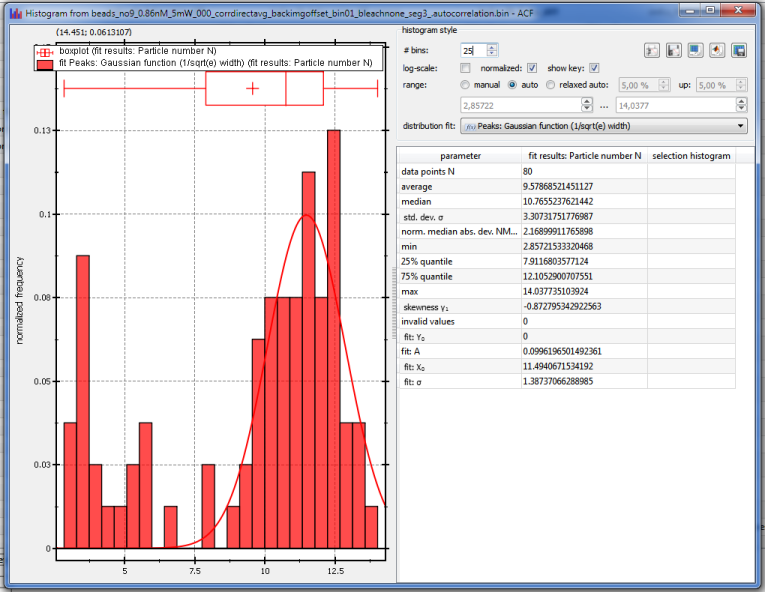
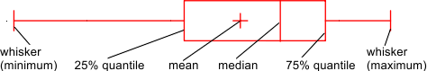

$$qf_commondoc_header.start$$ $$qf_commondoc_header.end$$
A histogram view or window is a central widget, provided by QuickFit, which allows to display the histogram of one or more datasets. The following image shows an example histogram for a single dataset.

- The left part of the widget shows a plot with the histogram as bar chart, a boxplot (above the histogram) of the statistical parameters of the distribution and a distribution fit to the histogram (red line). You can right-click the plot to open a context-menu, which allows to print, copy and save the data in the plot. You can also copy the plot into a table RDR.
- The major distribution properties are shown as a boxplot:

- The appearance of the histogram can be changed in several ways:
- # bins allows to set the number of bis, that are used to span the range of the histogram.
- log-scale: If this option is checked, the frequency axis of the histogram is scaled logarithmically. This is useful, if the distribution has low-frequency tails.
- show key switches the key in the histogram on and off.
- range allows to set the range of values, that are used for the histogram:
- manual The user can set the range manually below the radio-buttons
- auto uses the full data range for the histogram
- relaxed auto uses the full data range, but removes a fraction pl at the lower end and pu at the upper end. The fractions can be given on the rhs of the radio-button.
- distribution fit allows to select a fit function, which is automatically fitted to the histogram (shown as solid line). the resulting fit parameters are displayed in the table below.
- additional widgets may appear, based on the place, where this view is used within QuickFit
- The table at the bottom right of the window shows several statistical parameters (mean, median, quantiles, standard deviation, skewness etc. In addition the parameters of the current distribution fit are shown as fit: .... You can right-click the table to open a context-menu, which allows to print, copy and save the data in the table.
- At the top of the window, a series of buttons offers a set of possibilities to export the data in the histogram:
 Print histogram report prints a report with the histogram and the table of statistical properties.
Print histogram report prints a report with the histogram and the table of statistical properties. Save histogram report saves a report with the histogram and all statistical parameters as a PDF or ODT file.
Save histogram report saves a report with the histogram and all statistical parameters as a PDF or ODT file. Copy data used for histogram copies the input data, used to calculate the histogram, as a table into the clipboad (e.g. for use with Excel or Origin)
Copy data used for histogram copies the input data, used to calculate the histogram, as a table into the clipboad (e.g. for use with Excel or Origin) Copy data used for histogram as Matlab script copies the input data, used to calculate the histogram, as a Matlab script
Copy data used for histogram as Matlab script copies the input data, used to calculate the histogram, as a Matlab script Save data used for histogram saves the input data, used to calculate the histogram, into a data file (CSV, Matlab, Excel, ...)
Save data used for histogram saves the input data, used to calculate the histogram, into a data file (CSV, Matlab, Excel, ...)